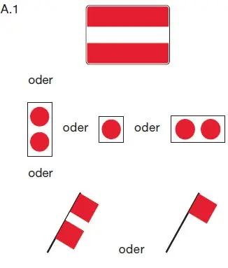
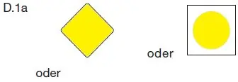
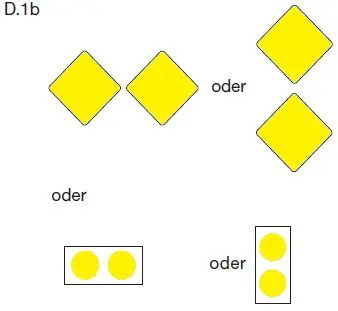

§ 6.27 Durchfahren der Wehre
Binnenschifffahrtsstraßen-Ordnung
1. Das Durchfahren einer Wehröffnung ist verboten. Das Verbot, eine Wehröffnung zu durchfahren, kann durch das Zeichen A.1 (Anlage 7) angezeigt werden. |  |
2. Das Durchfahren einer Wehröffnung ist nur gestattet, wenn diese links und rechts durch ein allgemeines Zeichen E.1 (Anlage 7) gekennzeichnet ist. | |
Abweichend von Satz 1 kann bei einem Wehr mit Wehrsteg das Durchfahren einer Wehröffnung auch durch das an dem Wehrsteg über der Öffnung angebrachte Zeichen D.1 (Anlage 7) gestattet werden. |  |
 |
3. Ein einzeln fahrendes Fahrzeug oder ein Verband darf durch eine Wehröffnung nicht mit größerer Geschwindigkeit fahren, als zu seiner Steuerung erforderlich ist. Im Bereich eines Wehres muss die Maschine so bereitgehalten werden, dass das Fahrzeug oder der Verband jederzeit manövrierfähig ist.
4. An ein geschlossenes Sicherheitstor und Hochwassersperrtor darf nur bis zu einem Abstand von 100,00 m herangefahren werden.